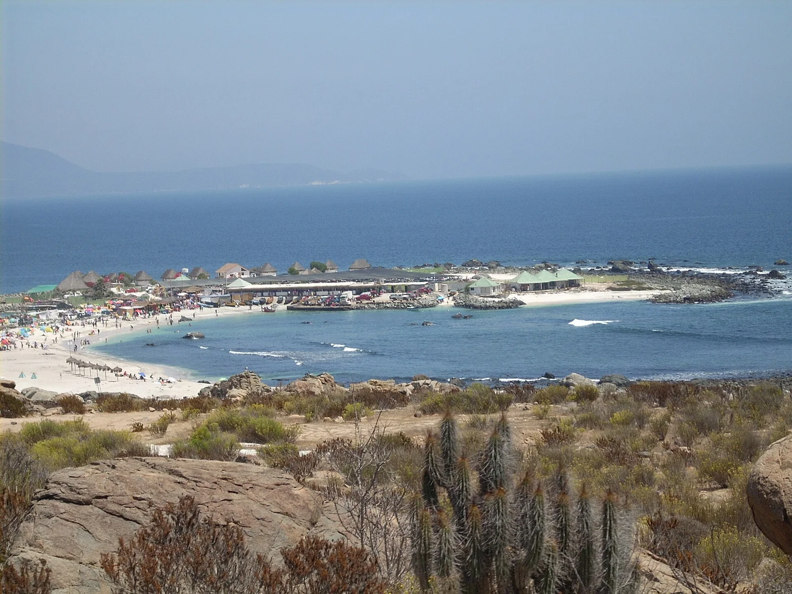

Totoralillo
Coquimbo, Chili · surf, baignade

Petite baie de sable blanc et d’eau turquoise au sud de Coquimbo, encadrée de rochers. Elle est connue des surfeurs de la région pour ses vagues sur fonds rocheux quand la houle rentre, et pour son eau claire par mer calme.
- Lieu
- Coquimbo, Chili
- Niveau
- Intermédiaire
- Activités
- surf, baignade
- Type d'eau
- Mer / océan
- Coordonnées
- -30.07, -71.38 (position approximative du secteur)
Dangers à connaître
- Fonds rocheux et rochers affleurants.
- Eau froide : combinaison intégrale nécessaire.
Le conseil d'Ocean Buddy
Par grosse houle, laisse le pic aux habitués et repère les sorties entre les rochers avant d’entrer.
Ouvrir dans Ocean Buddy Télécharger sur l'App Store
Source : Fiche Ocean Buddy · septembre 2026 · à vérifier localement.